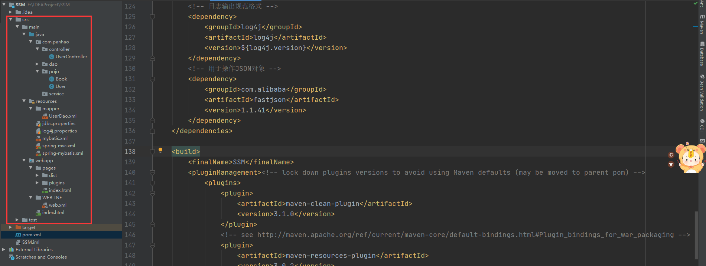

SSM搭建完整教程
如若今后没有炬火，你便是唯一的光
SSM框架搭建
1、引入依赖
<?xml version="1.0" encoding="UTF-8"?>
<project xmlns="http://maven.apache.org/POM/4.0.0" xmlns:xsi="http://www.w3.org/2001/XMLSchema-instance"
xsi:schemaLocation="http://maven.apache.org/POM/4.0.0 http://maven.apache.org/xsd/maven-4.0.0.xsd">
<modelVersion>4.0.0</modelVersion>
<groupId>org.example</groupId>
<artifactId>SSM</artifactId>
<version>1.0-SNAPSHOT</version>
<packaging>war</packaging>
<name>SSM Maven Webapp</name>
<!-- FIXME change it to the project's website -->
<url>http://www.example.com</url>
<properties>
<project.build.sourceEncoding>UTF-8</project.build.sourceEncoding>
<maven.compiler.source>1.7</maven.compiler.source>
<maven.compiler.target>1.7</maven.compiler.target>
<!-- spring版本号 -->
<spring.version>5.1.5.RELEASE</spring.version>
<!-- mybatis版本号 -->
<mybatis.version>3.2.6</mybatis.version>
<!-- log4j日志文件管理包版本 -->
<slf4j.version>1.7.7</slf4j.version>
<log4j.version>1.2.17</log4j.version>
</properties>
<dependencies>
<!-- Junit单元测试-->
<dependency>
<groupId>junit</groupId>
<artifactId>junit</artifactId>
<version>4.12</version>
<scope>test</scope>
</dependency>
<!-- lombok插件依赖，需要先安装lombok插件该依赖才能起作用-->
<dependency>
<groupId>org.projectlombok</groupId>
<artifactId>lombok</artifactId>
<version>1.18.12</version>
</dependency>
<!-- spring相关依赖包-->
<dependency>
<groupId>org.springframework</groupId>
<artifactId>spring-core</artifactId>
<version>${spring.version}</version>
</dependency>
<dependency>
<groupId>org.springframework</groupId>
<artifactId>spring-web</artifactId>
<version>${spring.version}</version>
</dependency>
<dependency>
<groupId>org.springframework</groupId>
<artifactId>spring-oxm</artifactId>
<version>${spring.version}</version>
</dependency>
<dependency>
<groupId>org.springframework</groupId>
<artifactId>spring-tx</artifactId>
<version>${spring.version}</version>
</dependency>
<dependency>
<groupId>org.springframework</groupId>
<artifactId>spring-jdbc</artifactId>
<version>${spring.version}</version>
</dependency>
<dependency>
<groupId>org.springframework</groupId>
<artifactId>spring-webmvc</artifactId>
<version>${spring.version}</version>
</dependency>
<dependency>
<groupId>org.springframework</groupId>
<artifactId>spring-aop</artifactId>
<version>${spring.version}</version>
</dependency>
<dependency>
<groupId>org.springframework</groupId>
<artifactId>spring-context-support</artifactId>
<version>${spring.version}</version>
</dependency>
<dependency>
<groupId>org.springframework</groupId>
<artifactId>spring-test</artifactId>
<version>${spring.version}</version>
</dependency>
<!-- mybatis核心包 -->
<dependency>
<groupId>org.mybatis</groupId>
<artifactId>mybatis</artifactId>
<version>${mybatis.version}</version>
</dependency>
<!-- mybatis/spring包 -->
<dependency>
<groupId>org.mybatis</groupId>
<artifactId>mybatis-spring</artifactId>
<version>1.2.2</version>
</dependency>
<!-- 导入java ee jar 包 -->
<dependency>
<groupId>javax</groupId>
<artifactId>javaee-api</artifactId>
<version>7.0</version>
</dependency>
<!-- 导入Mysql数据库链接jar包 -->
<dependency>
<groupId>mysql</groupId>
<artifactId>mysql-connector-java</artifactId>
<version>8.0.19</version>
</dependency>
<!-- 导入dbcp的jar包，用来在applicationContext.xml中配置数据库 -->
<dependency>
<groupId>commons-dbcp</groupId>
<artifactId>commons-dbcp</artifactId>
<version>1.2.2</version>
</dependency>
<!-- 日志输出规范格式 -->
<dependency>
<groupId>log4j</groupId>
<artifactId>log4j</artifactId>
<version>${log4j.version}</version>
</dependency>
<!-- 用于操作JSON对象 -->
<dependency>
<groupId>com.alibaba</groupId>
<artifactId>fastjson</artifactId>
<version>1.1.41</version>
</dependency>
</dependencies>
<build>
<finalName>SSM</finalName>
<pluginManagement><!-- lock down plugins versions to avoid using Maven defaults (may be moved to parent pom) -->
<plugins>
<plugin>
<artifactId>maven-clean-plugin</artifactId>
<version>3.1.0</version>
</plugin>
<!-- see http://maven.apache.org/ref/current/maven-core/default-bindings.html#Plugin_bindings_for_war_packaging -->
<plugin>
<artifactId>maven-resources-plugin</artifactId>
<version>3.0.2</version>
</plugin>
<plugin>
<artifactId>maven-compiler-plugin</artifactId>
<version>3.8.0</version>
</plugin>
<plugin>
<artifactId>maven-surefire-plugin</artifactId>
<version>2.22.1</version>
</plugin>
<plugin>
<artifactId>maven-war-plugin</artifactId>
<version>3.2.2</version>
</plugin>
<plugin>
<artifactId>maven-install-plugin</artifactId>
<version>2.5.2</version>
</plugin>
<plugin>
<artifactId>maven-deploy-plugin</artifactId>
<version>2.8.2</version>
</plugin>
</plugins>
</pluginManagement>
</build>
</project>
2、构建Maven项目
构建Maven项目无论是使用Eclipse或者是IDEA工具，都要确保其目录结构的完整性（建议使用org.apache.maven.archetypes:maven-archetype-webapp模板进行创建）。完整的Maven目录结构应该如下图所示：

src/main/java存放后端代码src/main/resources存放静态资源文件，包括各种配置文件，以及属性文件、Mapper文件等。src/main/webapp用于存放前端的页面，以及相关的图片、JS、CSS文件等静态资源。src/main/test/java用于存放测试所用到的代码，在编译的时候是不会被编译的。
3、进行相关的配置
在构建完Maven项目之后，需要对其进行配置，此时虽然已经具备了SSM框架的相关条件，但是相关的功能模块需要我们去进行组装。这里进行配置主要分为五个部分：
配置spring-mvc.xml
<?xml version="1.0" encoding="UTF-8"?>
<beans xmlns="http://www.springframework.org/schema/beans"
xmlns:xsi="http://www.w3.org/2001/XMLSchema-instance"
xmlns:context="http://www.springframework.org/schema/context"
xmlns:mvc="http://www.springframework.org/schema/mvc"
xsi:schemaLocation="
http://www.springframework.org/schema/beans
http://www.springframework.org/schema/beans/spring-beans-3.0.xsd
http://www.springframework.org/schema/context
http://www.springframework.org/schema/context/spring-context-3.0.xsd
http://www.springframework.org/schema/mvc
http://www.springframework.org/schema/mvc/spring-mvc-3.0.xsd">
<!-- 扫描所有的包 -->
<context:component-scan base-package="com.panhao"></context:component-scan>
<!-- 设置配置方案 -->
<!-- 设置配置方案 -->
<mvc:annotation-driven>
<!-- 不使用默认的消息转换器 -->
<mvc:message-converters
register-defaults="false">
<!-- 配置Spring的转换器 -->
<bean
class="org.springframework.http.converter.StringHttpMessageConverter" />
<bean
class="org.springframework.http.converter.ByteArrayHttpMessageConverter" />
<bean
class="org.springframework.http.converter.BufferedImageHttpMessageConverter" />
<bean
class="org.springframework.http.converter.FormHttpMessageConverter" />
<!-- 配置fastjson中实现HttpMessageConverter接口的转换器 -->
<bean id="fastJsonHttpMessageConverter"
class="com.alibaba.fastjson.support.spring.FastJsonHttpMessageConverter">
<!-- 加入支持的媒体类型，返回contentType -->
<property name="supportedMediaTypes">
<list>
<!--这里顺序不可以反，不然IE浏览器会出现下载提示 -->
<value>application/json;charset=UTF-8 </value>
<value>text/html;charset=UTF-8</value>
<value>text/plain;charset=UTF-8</value>
</list>
</property>
</bean>
</mvc:message-converters>
</mvc:annotation-driven>
<!-- 配置静态资源路径 -->
<mvc:resources location="/pages/" mapping="/pages/**/*.html" />
<mvc:resources location="/" mapping="/**/*.html" />
<mvc:resources location="/pages/" mapping="/pages/**/*.js" />
<mvc:resources location="/pages/" mapping="/pages/**/*.css" />
<!-- 配置视图解析器 -->
<bean
class="org.springframework.web.servlet.view.UrlBasedViewResolver">
<property name="viewClass"
value="org.springframework.web.servlet.view.InternalResourceView"></property>
<!-- 前缀（目录） -->
<property name="prefix" value="/pages/"></property>
<!-- 后缀文件名 -->
<property name="suffix" value=".html"></property>
</bean>
</beans>- 配置消息转换器的目的在于即使在不是MVC的相关的JSON转换注解，依旧可以将返回给前端的内容转换成JSON字符串。
- 配置静态资源文件的目的在于完全摒弃掉JSP的技术，通过配置静态资源文件，使得数据在HTML文件中进行传输，同时保证JS文件和CSS文件不会因为拦截的问题而无法使用。配置的时候需要注意的是：
- 配置用到的标签是
<mvc:resources />，每一个标签可以配置一种映射方法。 location的值表示的是静态资源存放的路径，mapping中的值表示的是URL中的路径。- 配置静态资源文件的目的，就是将后端的请求路由与静态资源分开，也就是将
mapping的路径通过映射的方式映射到location中去。 - 如上述配置中
<mvc:resources location="/pages/" mapping="/pages/**/*.html" />的含义就是：如果在浏览的路由地址中出现了/pages/**/*.html的路径，就将地址映射到/pages/文件夹下面去寻找对应的位置，而不是送到DispatcherServlet中去进行分发。
- 配置用到的标签是
- 配置视图解析器，是在返回
String，可以直接返回视图。
配置spring-mybtis.xml
<?xml version="1.0" encoding="UTF-8"?>
<beans xmlns="http://www.springframework.org/schema/beans"
xmlns:xsi="http://www.w3.org/2001/XMLSchema-instance"
xmlns:p="http://www.springframework.org/schema/p"
xmlns:context="http://www.springframework.org/schema/context"
xmlns:mvc="http://www.springframework.org/schema/mvc"
xsi:schemaLocation="http://www.springframework.org/schema/beans
http://www.springframework.org/schema/beans/spring-beans-3.1.xsd
http://www.springframework.org/schema/context
http://www.springframework.org/schema/context/spring-context-3.1.xsd
http://www.springframework.org/schema/mvc
http://www.springframework.org/schema/mvc/spring-mvc-4.0.xsd">
<!-- 自动扫描 -->
<context:component-scan
base-package="com.panhao" />
<!-- 引入配置文件 -->
<bean id="propertyConfigurer"
class="org.springframework.beans.factory.config.PropertyPlaceholderConfigurer">
<property name="location" value="classpath:jdbc.properties" />
</bean>
<bean id="dataSource"
class="org.apache.commons.dbcp.BasicDataSource" destroy-method="close">
<property name="driverClassName" value="${driver}" />
<property name="url" value="${url}" />
<property name="username" value="${username}" />
<property name="password" value="${password}" />
<!-- 初始化连接大小 -->
<property name="initialSize" value="${initialSize}" />
<!-- 连接池最大数量 -->
<property name="maxActive" value="${maxActive}" />
<!-- 连接池最大空闲 -->
<property name="maxIdle" value="${maxIdle}" />
<!-- 连接池最小空闲 -->
<property name="minIdle" value="${minIdle}" />
<!-- 获取连接最大等待时间 -->
<property name="maxWait" value="${maxWait}" />
</bean>
<!-- spring和MyBatis完美整合，不需要mybatis的配置映射文件 -->
<bean id="sqlSessionFactory"
class="org.mybatis.spring.SqlSessionFactoryBean">
<property name="dataSource" ref="dataSource" />
<!-- 自动扫描mapping.xml文件 -->
<property name="mapperLocations"
value="classpath:mapper/*.xml"></property>
<!--配置Mybatis别名扫描的包-->
<property name="typeAliasesPackage" value="com.panhao.pojo" />
<property name="configLocation" value="classpath:mybatis.xml" />
</bean>
<!-- DAO接口所在包名，Spring会自动查找其下的类 -->
<bean class="org.mybatis.spring.mapper.MapperScannerConfigurer">
<property name="basePackage" value="com.panhao.dao" />
<property name="sqlSessionFactoryBeanName"
value="sqlSessionFactory"></property>
</bean>
<!-- (事务管理)transaction manager, use JtaTransactionManager for global tx -->
<bean id="transactionManager"
class="org.springframework.jdbc.datasource.DataSourceTransactionManager">
<property name="dataSource" ref="dataSource" />
</bean>
</beans>
- 配置的目的是将Spring与Mybatis整合起来，配置数据源是为连接数据库做准备。利用属性文件的好处，便于修改数据库的连接信息。所以在最开始需要引入属性文件。
- 配置
sqlSessionFactory和MapperScannerConfigurer是为了实现Mapper文件的自动映射，事务管理是为了数据库中的多条SQL语句可以一起执行完毕，或者是一起执行失败。
配置web.xml
<?xml version="1.0" encoding="UTF-8"?>
<web-app xmlns="http://java.sun.com/xml/ns/javaee"
xmlns:xsi="http://www.w3.org/2001/XMLSchema-instance"
xsi:schemaLocation="http://java.sun.com/xml/ns/javaee
http://java.sun.com/xml/ns/javaee/web-app_3_0.xsd"
version="3.0">
<display-name>web-ssm</display-name>
<!--配置Spring与Mybatis的整合文件，在Tomcat启动的时候，就初始化Spring容器-->
<context-param>
<param-name>contextConfigLocation</param-name>
<param-value>classpath:spring-mybatis.xml</param-value>
</context-param>
<!--配置Log4J的输出格式，以及输出的内容和形式-->
<context-param>
<param-name>log4jConfigLocation</param-name>
<param-value>classpath:log4j.properties</param-value>
</context-param>
<!-- 编码过滤器，在前后端之间的交互中避免出现中文乱码的现象 -->
<filter>
<filter-name>encodingFilter</filter-name>
<filter-class>org.springframework.web.filter.CharacterEncodingFilter</filter-class>
<init-param>
<param-name>encoding</param-name>
<param-value>UTF-8</param-value>
</init-param>
</filter>
<filter-mapping>
<filter-name>encodingFilter</filter-name>
<url-pattern>/*</url-pattern>
</filter-mapping>
<!-- spring监听器 -->
<listener>
<listener-class>org.springframework.web.context.ContextLoaderListener</listener-class>
</listener>
<!-- 防止spring内存溢出监听器，比如quartz -->
<listener>
<listener-class>org.springframework.web.util.IntrospectorCleanupListener</listener-class>
</listener>
<!-- 配置DispatcherServlet用于拦截请求，进行请求转发-->
<servlet>
<servlet-name>SpringMVC</servlet-name>
<servlet-class>org.springframework.web.servlet.DispatcherServlet</servlet-class>
<!--配置Spring与Spring Mvc整合文件的位置-->
<init-param>
<param-name>contextConfigLocation</param-name>
<param-value>classpath:spring-mvc.xml</param-value>
</init-param>
<!--在Tomcat启动的时候就开始加载配置文件-->
<load-on-startup>1</load-on-startup>
<async-supported>true</async-supported>
</servlet>
<servlet-mapping>
<servlet-name>SpringMVC</servlet-name>
<!-- 配置拦截请求的方法，可以配置成任何的形式，常见为： / *.do-->
<url-pattern>/</url-pattern>
</servlet-mapping>
<!--设置欢迎页面，在Tomcat初始化完成之后直接显示该页面-->
<welcome-file-list>
<welcome-file>/index.html</welcome-file>
</welcome-file-list>
<!-- session配置 -->
<session-config>
<session-timeout>15</session-timeout>
</session-config>
</web-app>配置Mybatis
<?xml version="1.0" encoding="UTF-8"?>
<!DOCTYPE configuration PUBLIC "-//mybatis.org//DTD Config 3.0//EN"
"http://mybatis.org/dtd/mybatis-3-config.dtd">
<configuration>
<settings>
<!--用于设置Mybatis中数据库列名与Java Bean之间驼峰转下换线的映射关系-->
<setting name="mapUnderscoreToCamelCase" value="true" />
</settings>
</configuration>其他的相关的属性文件
属性文件用于存储常量，具备良好的展现形式，以及Spring对其的加载支持。首先需要一个连接数据库的属性文件：
driver=com.mysql.cj.jdbc.Driver
url=jdbc:mysql://localhost:3306/mydb?useSSL=false&serverTimezone=CTT&characterEncoding=UTF-8
username=root
password=panhao
#定义初始连接数
initialSize=0
#定义最大连接数
maxActive=20
#定义最大空闲
maxIdle=20
#定义最小空闲
minIdle=1
#定义最长等待时间
maxWait=60000
还需要一个Log4J日志格式化配置属性文件：
#定义LOG输出级别
log4j.rootLogger=INFO,Console,File
#定义日志输出目的地为控制台
log4j.appender.Console=org.apache.log4j.ConsoleAppender
log4j.appender.Console.Target=System.out
#可以灵活地指定日志输出格式，下面一行是指定具体的格式
log4j.appender.Console.layout = org.apache.log4j.PatternLayout
log4j.appender.Console.layout.ConversionPattern=[%c] - %m%n
#文件大小到达指定尺寸的时候产生一个新的文件
log4j.appender.File = org.apache.log4j.RollingFileAppender
#指定输出目录
log4j.appender.File.File = logs/ssm.log
#定义文件最大大小
log4j.appender.File.MaxFileSize = 10MB
# 输出所以日志，如果换成DEBUG表示输出DEBUG以上级别日志
log4j.appender.File.Threshold = ALL
log4j.appender.File.layout = org.apache.log4j.PatternLayout
log4j.appender.File.layout.ConversionPattern =[%p] [%d{yyyy-MM-dd HH:mm:ss}][%c]%m%n 值得注意的是，所有的Properties文件都尽量放在src/main/resources文件夹的下面
4、SSM应用实例
SSM实际上就是一种用于便捷操作数据的框架设计结构。在JavaEE中的开发结构，在这里依旧是可以使用的。将后端进行分层设计，以达到解耦的效果。可以更好的适应多人协作开发的需求。
首先需要完善后端的四层结构：controller service dao pojo
其中数据的流动方向为controller=>service=>dao表示用户请求数据，dao=>service=>controller表示服务器返回数据。pojo作为数据处理的基本单元。
首先创建一个User类与数据库的表之间做出映射：
package com.panhao.pojo;
import lombok.AllArgsConstructor;
import lombok.Data;
import lombok.NoArgsConstructor;
import org.apache.ibatis.type.Alias;
import java.util.Date;
/**
* @program:SSM
* @description:cc
* @author:Mr.Pan
* @create:2020-10-26 22:22:16
*/
//该注解属于Lombok依赖中，用于自动生成类的常规方法，例如get/set/toString/equals...
@Data
//该注解属于Lombok依赖中，用于创建一个无参数的构造方法
@NoArgsConstructor
//该注解属于Lombok依赖中，用于创建一个全参数的构造方法
@AllArgsConstructor
//该注解属于Mybatis，用于创建类的别名，需要在配置文件中开启，才可以扫描到，然后在Mapper文件中使用别名来代替类的全限定名
@Alias("user")
public class User {
private int id;
private String firstName;
private String lastName;
private Date createAt;
private Date updateAt;
}
创建一个UserDao用于操作数据：
package com.panhao.dao;
import com.panhao.pojo.User;
import org.springframework.stereotype.Repository;
import java.util.List;
//该注解属于Spring，用于将该接口映射为持久层方法，便于与Mapper文件中进行自动映射
@Repository
public interface UserDao {
List<User> getAllUser();
}
在src/main/resources中创建文件/mapper/UserDao.xml用于与上面的接口做自动映射：
<?xml version="1.0" encoding="UTF-8" ?>
<!DOCTYPE mapper
PUBLIC "-//mybatis.org//DTD Mapper 3.0//EN"
"http://mybatis.org/dtd/mybatis-3-mapper.dtd">
<!-- nameSpace表示命名空间，要和我们映射的接口的全限定类名必须完全一致-->
<mapper namespace="com.panhao.dao.UserDao">
<!-- 表示执行select操作，这里需要与接口中的方法进行映射，id属性表示的方法名，需要与映射的接口中相同逻辑的方法的名称完全一致-->
<select id="getAllUser" resultType="com.panhao.pojo.User">
select * from users;
</select>
</mapper>此时就已经有一个完成数据流动的过程，创建一个UserController用于接受用户的请求：
package com.panhao.controller;
import com.panhao.dao.UserDao;
import com.panhao.pojo.Book;
import com.panhao.pojo.User;
import org.springframework.beans.factory.annotation.Autowired;
import org.springframework.stereotype.Controller;
import org.springframework.web.bind.annotation.RequestMapping;
import org.springframework.web.bind.annotation.ResponseBody;
import java.util.List;
/**
* @program:SSM
* @description:测试
* @author:Mr.Pan
* @create:2020-10-26 22:22:13
*/
@Controller
public class UserController {
@Autowired
private UserDao userDao;
@RequestMapping("/hello.do")
@ResponseBody
public String hello(){
return "dasdadsa";
}
@RequestMapping("/user")
@ResponseBody
public List<User> hello1(){
return userDao.getAllUser();
}
}
最后在浏览器中输入http://localhost:8080/SSM/user即可得到数据库中的数据。
 wechat
wechat alipay
alipay